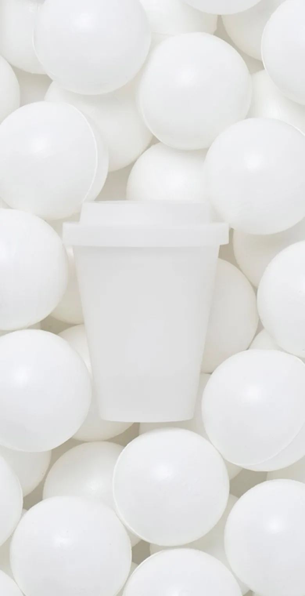
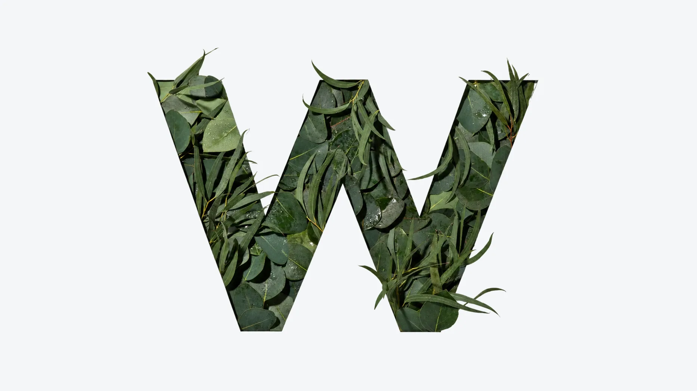
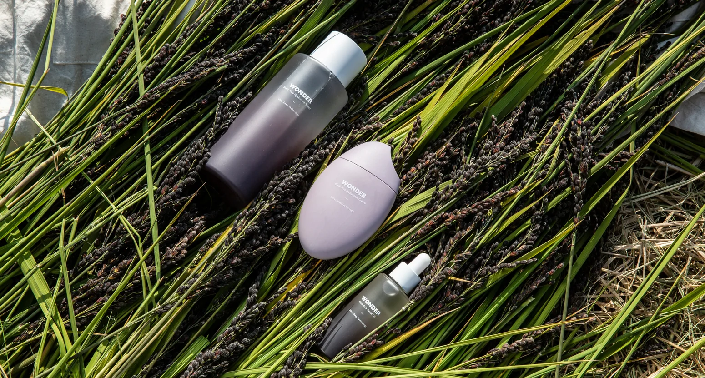
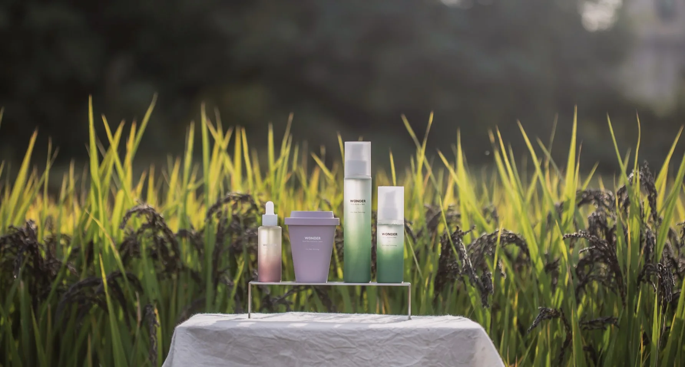
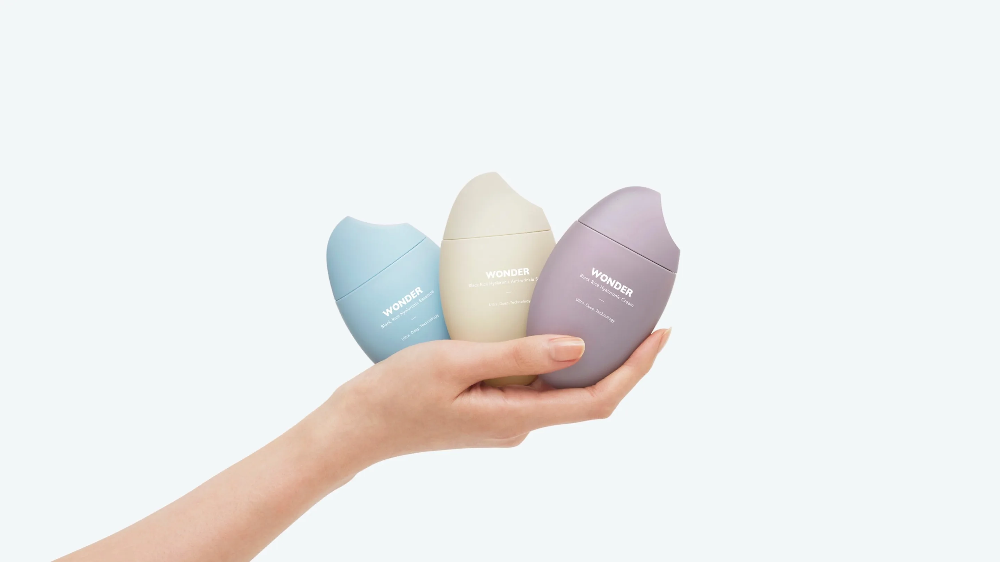
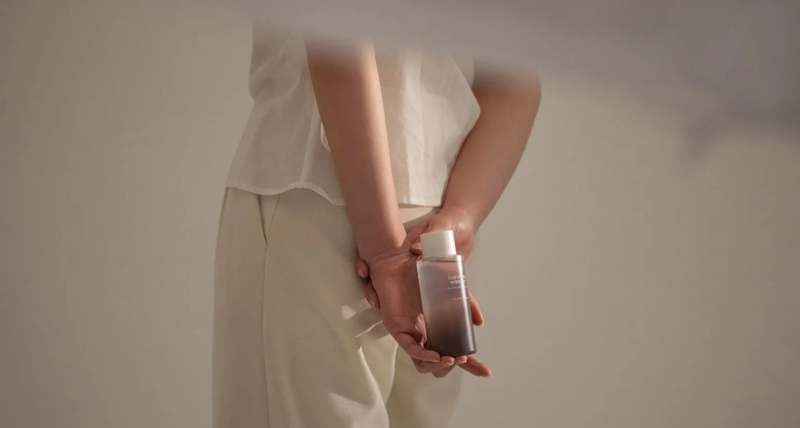
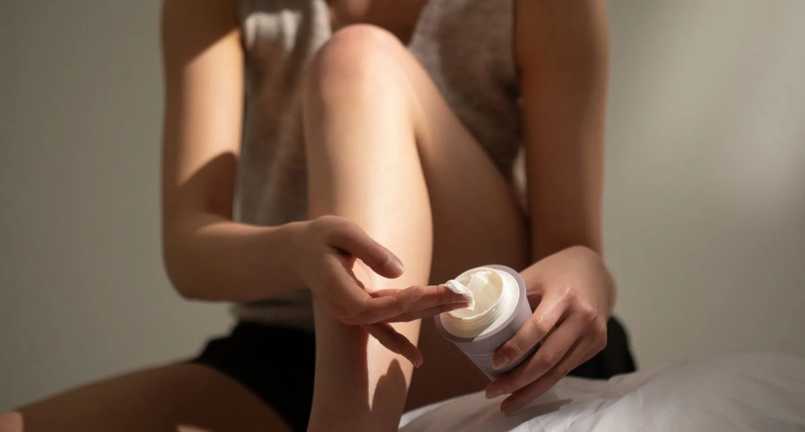
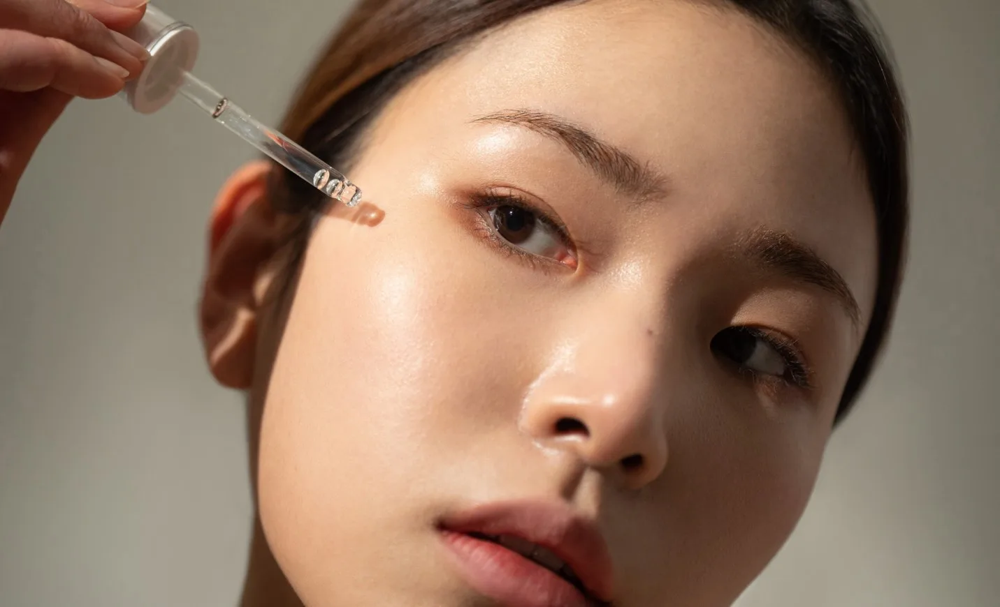
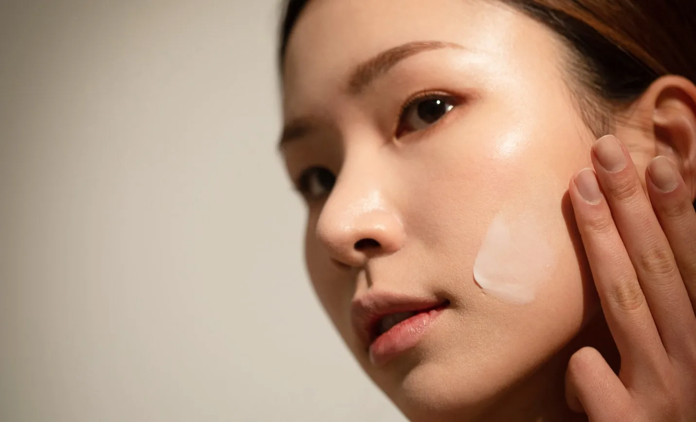
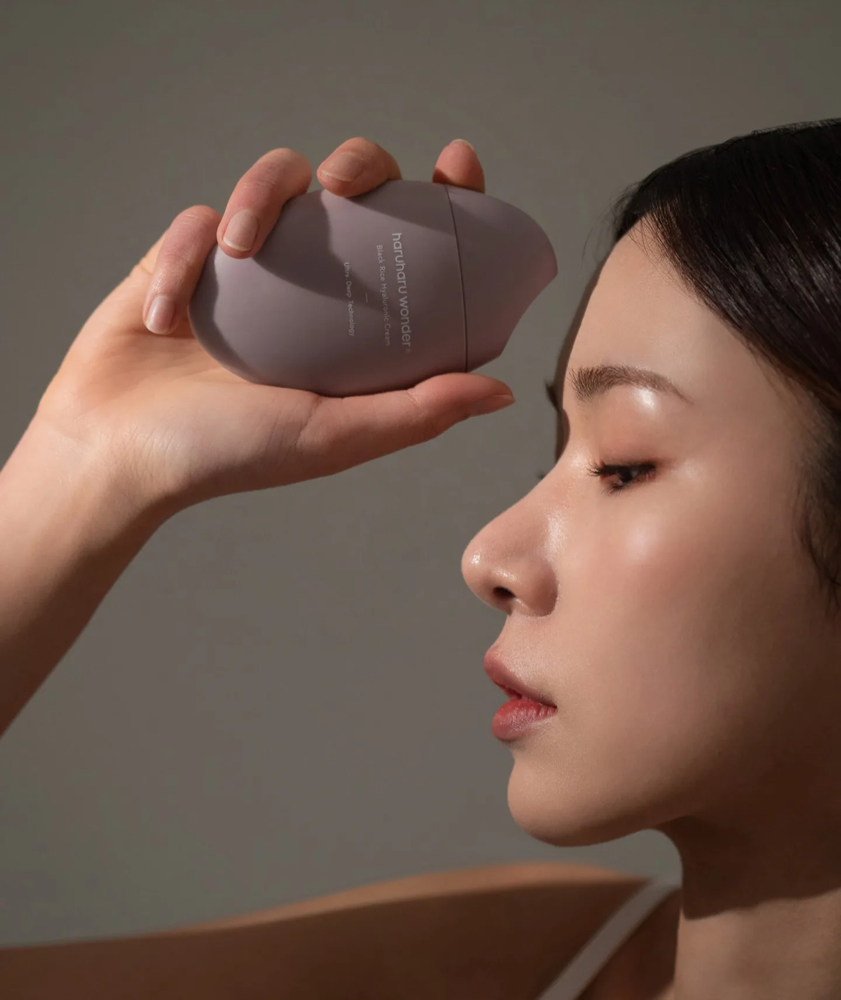

haruharu Product
Production
Healthy Beauty, Rooted in Nature
haruharu wonder는 이름처럼,
매일의 작은 돌봄이 쌓여
건강한 피부를 만든다고 믿는
비건 스킨케어 브랜드입니다.
PL2는 브랜드 필름, 제품 촬영,
모델 비주얼을 하나의 흐름으로 설계해,
브랜드의 순하고 편안한 인상이
제품에서 사람으로
끊김 없이 이어지도록 했습니다.haruharu is a vegan skincare brand rooted in nature-inspired, healthy beauty.
PL2 produced a brand film, product photography, and model visuals that bring its clean,
natural philosophy to life. Every element was planned to share a single mood
and visual identity throughout the project.True to its name, which means
“day by day” in Korean,
haruharu wonder is a vegan
skincare brand built on the belief
that healthy skin comes from small
acts of care, repeated every day.
PL2 designed the brand film, product
photography, and model visuals
as one continuous flow, so the brand’s
gentle, easy presence carries
from the products to the people.
아름다움은 하루에 완성되지 않습니다.
하루하루 쌓여 갈 뿐입니다.haruharu's Healthy Beauty
Begins with Nature

DFS WONDER
Rooted in Nature
하루하루원더의 출발점은 자연입니다.
비건 원료와 순한 처방이라는
브랜드의 기준을 먼저 이해하고,
그 담백한 인상을 빛과 색,
질감으로 옮겼습니다.
제품 컷에서 인물 컷까지 같은 톤을 유지하며
촬영 전반의 방향을 잡았습니다.For haruharu, healthy beauty begins with nature.
We shaped a visual direction around soft natural light, organic textures, and an earthy palette, carrying the same calm,
clean mood through every image and frame.


Everyday Essentials
손안에 쥐어지는 쌀알 모양의 둥근 형태와 패키지의 그라데이션을
살렸습니다.
같은 제품을 반복해 놓아 하나의 패턴을 만들고,
라인업이 한눈에 읽히도록 구성했습니다.We highlighted the round, rice-grain shape that sits
in the palm
and the soft gradient of each package. Arranged in repeating patterns,
the products let the whole lineup read at a glance.

Small Daily Rituals
한 손에 들어오는 크기와 군더더기 없는 제품 형태에 주목해,
나를 돌보는 짧은 시간의 순간을 따뜻하고 포근한 컬러 톤으로
담백하게 담았습니다.Good skin is built on small, everyday habits.
We focused on the products’ compact size and simple forms, showing how haruharu fits effortlessly
into a daily routine.


Watch the Full Film
Beauty, Naturally
꾸미지 않은 건강한 피부와 편안한 표정을
가까이 들여다보며,
제품에서 사람에게로 스며드는
haruharu의 이야기를 이미지로 담았습니다We extended haruharu's nature-inspired identity
into model photography and the brand film.
By focusing on healthy skin, natural expressions,
and soft lighting, we captured the effortless beauty
and comfortable atmosphere that define the brand.


